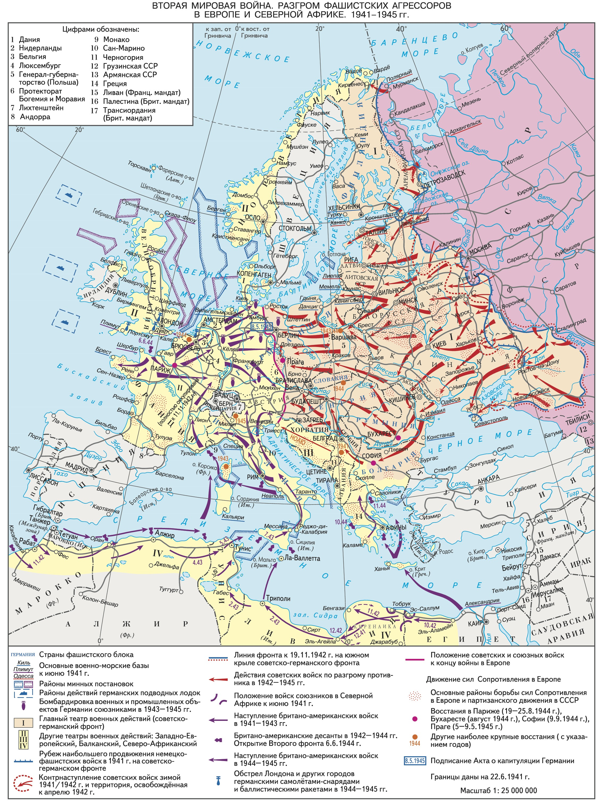
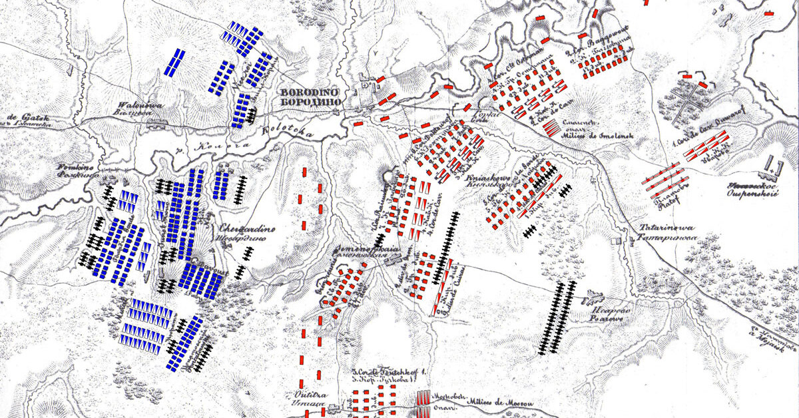

Военная тактика
Введение боя
Ведение боевых действий русскими, особенно в наступлении, характеризуется использованием большого количества живой силы и техники, которые командование часто вводит в бой безрассудно и упрямо, однако добивается успеха. Русские всегда славились своим презрением к смерти; коммунистический режим еще больше развил это качество, и сейчас массированные атаки русских эффективнее, чем когда-либо раньше. Дважды предпринятая атака будет повторена в третий и четвертый раз, невзирая на понесенные потери, причем и третья и четвертая атаки будут проведены с прежним упрямством и хладнокровием. До самого конца войны русские, не обращая внимания на огромные потери, бросали пехоту в атаку почти в сомкнутых строях. Стадный инстинкт и, неспособность младших командиров действовать самостоятельно всегда заставляли русских вести атаки массированно, в плотных боевых порядках. Благодаря превосходству в численности этот метод позволил добиться многих крупных успехов. Однако опыт показывает, что такие массовые атаки можно выдержать, если обороняющиеся хорошо подготовлены, имеют достаточное количество вооружения и действуют под руководством решительных командиров. Русские дивизии, имевшие очень многочисленный состав, наступали, как правило, на узком фронте. Местность перед фронтом обороняющихся в мгновение ока вдруг заполнялась русскими. Они появлялись словно из-под земли, и казалось, невозможно сдержать надвигающуюся лавину. Огромные бреши от нашего огня немедленно заполнялись; одна за другой катились волны пехоты, и лишь когда людские резервы иссякали, они могли откатиться назад. Но часто они не отступали, а неудержимо устремлялись вперед. Отражение такого рода атаки зависит не столько от наличия техники, сколько от того, выдержат ли нервы. Лишь закаленные в боях солдаты были в состоянии преодолеть страх, который охватывал каждого. Только солдат, сознающий свой долг, верящий в свои силы, только тот, кто научился действовать, полагаясь на себя самого, сможет выдержать ужасное напряжение русской массированной атаки. После 1941 года к людским массам русских добавились массы танков. Отбить такие атаки, было конечно, значительно труднее, и стоило это гораздо большего нервного напряжения. Хотя русские, как мне кажется, не слишком сильны в искусстве создавать импровизированные части, они понимают, как важно в любое время, иметь в готовности новые войска для замены разбитых и потрепанных соединений, и в общем умеют это делать. Они заменяли свои обескровленные части с удивительной быстротой. Выше уже говорилось, что русские подлинные мастера просачивания — формы боевых действий, в которой они не имеют себе равных. Я обращал также внимание на их настойчивое стремление к созданию плацдармов или любых других выдвинутых вперед позиций. Я должен подчеркнуть, что, если вы даже на некоторое время примиритесь с захватом русскими плацдарма, это может привести к роковым последствиям. На плацдарм будут подходить все новые и новые пехотные части, танки и артиллерия, и это будет продолжаться до тех пор, пока с него, наконец, не начнется наступление. Русские предпочитают совершать передвижения своих войск в ночное время и проявляют при этом большое искусство. Однако они не любят проводить ночью широкие наступательные действия — видимо, они понимают, что младшие командиры недостаточно к этому подготовлены. Но ночные атаки с ограниченной целью (чтобы восстановить утраченное положение или облегчить планируемое на дневное время наступление) они проводят.
